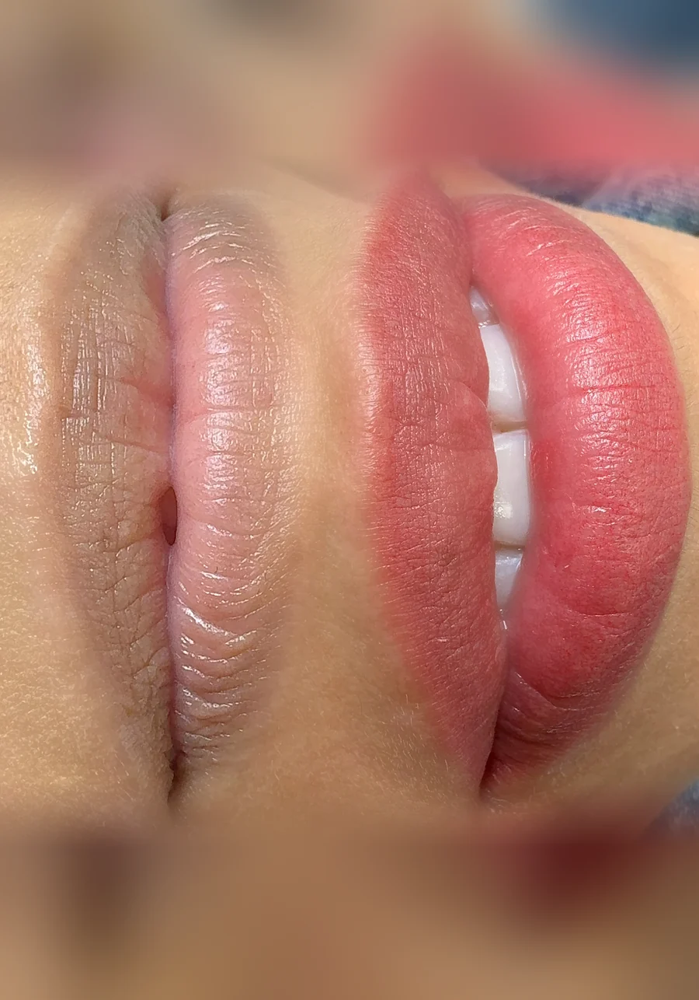
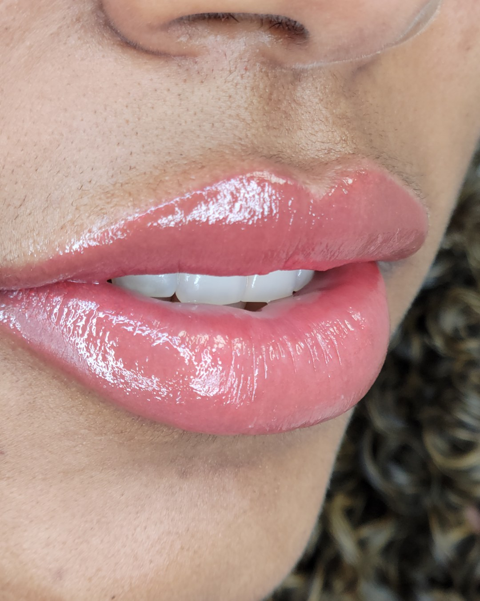

Correcting the base first
Dark Lip Neutralization in Wilmington, MA
Dark Lip Neutralization in Wilmington, MA costs $550 and includes the perfecting session, using advanced color correction to neutralize dark, cool, or uneven lip pigmentation before a more balanced tone is built. Book with Master Permanent Makeup Artist Adriana Souza Santos at 211 Lowell Street, Suite F, on Route 129.
Starting at $550 USD
- 20+
- Years in the industry
- 5,000+
- Procedures performed
- EN & PT
- Consultations
Dark Lip Neutralization in Wilmington, MA, Healed
Real results from the studio, photographed as they healed.
1 3
How Much Does Dark Lip Neutralization Cost in Wilmington, MA, and What's Included?
Dark Lip Neutralization in Wilmington, MA costs $550, already including the perfecting session 6 to 8 weeks after the procedure. A yearly touch-up, from $300, follows about 12 months later. Cherry offers 4 interest-free payments or a longer plan; approval is set by Cherry, not the studio.
| Item | Detail |
|---|---|
| Procedure price | $550 |
| What's included | Consultation, pigment analysis, numbing, and the correction |
| Perfecting session | Included, 6 to 8 weeks after the procedure |
| Yearly touch-up | From $300, about 12 months later |
| Payment plan | 4 interest-free payments or longer, via Cherry; approval not guaranteed |
Who Should Book Dark Lip Neutralization in Wilmington, MA, and Who Should Not?
Dark Lip Neutralization in Wilmington, MA is the right starting point for clients near Route 129 with naturally deeper, cooler, or uneven lip pigmentation who want a more balanced base before color is added. It is not appropriate for anyone pregnant, breastfeeding, under 18, or using isotretinoin, with no exception at either studio.
- Good fit: Wilmington-area clients with naturally dark, cool, or uneven lip tones, including Portuguese speakers
- Not a fit: anyone pregnant, breastfeeding, or under 18, at either studio
- Not yet: isotretinoin, blood thinners, autoimmune, or keloid history without clearance. See the contraindications guide
- Talk to your doctor first: anyone with a history of cold sores (HSV-1), since lip tattooing can trigger a reactivation. Get clearance from a clinician first
Dark, cool, or uneven tone: start here. Already even? Go straight to Lip Blush in Wilmington instead.
How Does a Dark Lip Neutralization Appointment Work at the Wilmington Studio?
A Wilmington Dark Lip Neutralization appointment starts with a consultation assessing your current undertone, moves into a corrective pass using warm tones under topical numbing, and ends with written aftercare instructions. Neutralization is a correction, not a one-visit color choice, so more than one session is common before the base tone looks fully even and balanced.
- Consultation and undertone assessment
- Corrective plan built around your existing pigmentation
- Topical numbing before the corrective pass
- The procedure: a warm-toned pass neutralizing dark or cool areas
- Written aftercare instructions to take home
- Perfecting session, 6 to 8 weeks later, included in the $550
More than one session is common for deeper starting pigmentation; full healing detail is in the aftercare guide.
Why Book Dark Lip Neutralization at the Wilmington, MA Studio Specifically?
Wilmington's Board of Health, not a single Massachusetts license, requires an establishment permit and an individual practitioner permit naming the body art performed, under M.G.L. Chapter 111, Section 31. The studio sits on Route 129 near the I-93 interchange, about 11 miles from Reading, Woburn, or Andover.
Lowell Street is Route 129, crossing Route 38 in town center. Wilmington has two MBTA stations: Wilmington (405 Main Street, Lowell Line) and North Wilmington (370 Middlesex Avenue, Haverhill Line).
| Town | Driving distance |
|---|---|
| Reading, MA | 2.7 mi |
| Woburn, MA | 4.7 mi |
| Burlington, MA | 5.0 mi |
| Tewksbury, MA | 7.2 mi |
| Andover, MA | 10.6 mi |
What Backs the Artist Performing Dark Lip Neutralization in Wilmington?
Adriana Souza Santos, the Master Permanent Makeup Artist performing Dark Lip Neutralization at the Wilmington studio, has completed 5,000+ procedures and trained 300+ students over a 20-plus year career begun in Brazil before the U.S. studio opened in 2017, holds an AAM Diamond Certified Trainer credential, and consults in English and Portuguese.
Color correction on deeper, warmer lip tones is routine in Brazilian PMU training, where Adriana's career began, part of why this is a genuine specialism here, not an add-on to Lip Blush. Livian Camargo Gomes, a second licensed artist, also works at this studio.

Why Might Dark Lip Neutralization Look Warm or Orange at First?
This is normal, not a mistake: neutralization adds warm tone to cancel out cool, dark, or blue-grey pigment, so the freshly healed result can look warmer or more orange-leaning before it settles over the following weeks. It is a correction stage, not a finished color choice; added color comes later through Lip Blush.
Anyone with cold sores should see a physician first, since lip tattooing can trigger HSV-1 reactivation. That is a question for a doctor, not the studio. A second corrective session is common and gets discussed at consultation. Deposit terms: (781) 853-8063; infection signs are in the aftercare guide.
Frequently Asked Questions About Dark Lip Neutralization in Wilmington, MA
Dark Lip Neutralization in Wilmington, MA is performed at 211 Lowell Street, Suite F, reached at (781) 853-8063. The studio is open Monday through Saturday, 10:00 a.m. to 6:00 p.m., closed Sunday, a different address and phone number than the Salem, New Hampshire studio.
That is normal, not a mistake. Neutralization works by adding warm tone to cancel out cool, dark, or blue-grey pigment, so the freshly healed result at the Wilmington studio can look warmer or more orange-leaning than expected before it settles over the following weeks.
It replaces nothing, it prepares the base. Neutralization corrects dark, cool, or uneven pigmentation first; once Wilmington clients heal from that correction, adding soft color with Lip Blush becomes a separate, predictable next step, not an automatic part of this $550 procedure.
It starts with a consultation assessing your undertone, moves into a corrective pass with warm tones under topical numbing, and ends with written aftercare instructions. Because this is a correction, not a single color choice, more than one session is common.
Dark Lip Neutralization in Wilmington, MA costs $550, including the consultation, pigment analysis, topical numbing, the first corrective pass, and a perfecting session 6 to 8 weeks later. Because more than one session is common for deeper pigmentation, further correction is discussed and priced at consultation.
Not usually. Wilmington clients with dark, cool, or uneven lip pigmentation book Dark Lip Neutralization first, heal, and return for Lip Blush afterward only if they still want added color. Each procedure is its own $550 visit, sequenced rather than combined in one sitting.
It is the right starting point for Wilmington clients with naturally deeper, cooler, or blue-grey lip pigmentation who want a more even, balanced base before any color is added. Clients whose lip tone is already even do not need this step and can go straight to Lip Blush instead.
Speak with your physician before booking. Lip tattooing can trigger an HSV-1 reactivation in people with a cold sore history, and that is a medical question for your doctor, not the studio. The Wilmington studio does not prescribe or recommend any medication for this.
Yes. Cherry offers 4 interest-free payments, or a longer plan of up to 24 months with interest. Checking your options takes about a minute and uses a soft credit check, so it does not affect your credit score. Cherry is an independent financing provider: it sets approval and rates, not the studio. See how the payment plan works.
The perfecting session exists for exactly that. It is scheduled 6 to 8 weeks after the first appointment, once the skin has healed, and it is included in the original price at no extra charge. Pigment settles differently on different skin, so the second pass is part of the procedure rather than a repair you pay for.
Most clients book a colour refresh every 12 to 24 months; how long the pigment itself lasts depends on the technique and your skin (each service page gives its own range). After that, a yearly touch-up refreshes the colour from $300, priced by how much pigment is left rather than at a flat rate. That is a separate visit from the perfecting session, which is included in the original price and happens in the first weeks.
Yes. Pregnancy, breastfeeding, being under 18, and current isotretinoin use are refused at both studios, with no exception. Blood thinners, autoimmune conditions and a history of keloid scarring need clearance from your doctor first. The full list is published in the contraindications guide before you book, not after.
Adriana Souza Santos has performed more than 5,000 procedures across 20+ years and trained over 300 students. She holds AAM Diamond Certified Trainer status and New Hampshire Body Artist licence 4283, valid through 18 July 2028, which you can verify yourself at the state’s public lookup rather than take on trust.
Explore Other Lip Work and the Wilmington Studio
Dark Lip Neutralization is one of two lip techniques at the Wilmington studio, alongside Lip Blush for clients ready to add soft color once the base tone is balanced. Both include the perfecting session, with its own page for Wilmington pricing and detail.
- Dark Lip Neutralization overview: full technique guide and healing timeline
- Lip Blush in Wilmington, $550
See the Wilmington, MA studio page or the aftercare guide.
What Dark Lip Neutralization Looks Like Once It Has Healed

Neutralizing works in layers. A correcting tone is laid first to cancel the cool pigment, and only then is the final colour built on top.
Which Licenses Cover This Work in Wilmington?
Massachusetts has no single state body art license. Wilmington’s own Board of Health issues both licenses that cover this work: Body Art Facility License 20261921 for the studio at 211 Lowell Street, and Body Art Practitioner License 20261923 for the artist. Both run through 31 December 2026.
| License | Number | Issued by | Valid through |
|---|---|---|---|
| Body Art Facility | 20261921 | Wilmington Board of Health | 31 Dec 2026 |
| Body Art Practitioner, Adriana Santos | 20261923 | Wilmington Board of Health | 31 Dec 2026 |
| Body Art Practitioner, Livian Camargo Gomes | 20261924 | Wilmington Board of Health | 31 Dec 2026 |
Under Massachusetts General Laws Chapter 111, Section 31, each town’s Board of Health writes its own body art rules, so a permit issued in Wilmington does not carry over to another Massachusetts town. Both licenses are posted in the studio, as Wilmington requires.
Ready to Book Dark Lip Neutralization in Wilmington, MA?
Book online for real-time availability at 211 Lowell Street, Suite F, or call (781) 853-8063 before you commit. Prefer Salem, NH? See that studio's Dark Lip Neutralization page.
Book Now in Wilmington